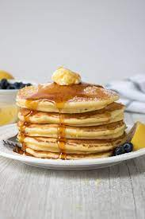

Lemon-Ricotta Pancakes

A Light and Fluffy Style of Pancake
If these pancakes were any lighter, they would float off the plate--and
I didn't even separate the eggs and whip the whites.
Also, I used water instead of milk--and I liked them
better that way. I like to serve these with a pat of butter,
a pinch of lemon zest, and a drizzle of maple syrup.
Ingredients
- 3/4 cups of cold water or milk
- 1/2 teaspoon baking soda
- 1 tablespoon grated lemon zest
- 1 tablespoon vegetable oil
- 1 tablespoon white sugar
- 1 large egg
- 1/8 teaspoon vanilla extract
- 2 tablespoons melted butter
- 1 tablespoon lemon juice
- 1 cup self-rising flour
- 2 tablespoons self-rising flour